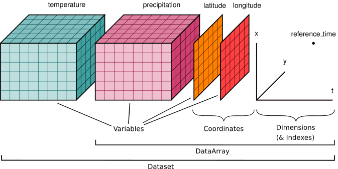
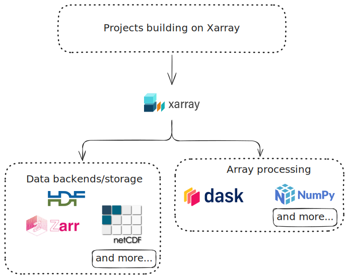

<!DOCTYPE html>
<html lang="en">
  <head>
    <meta charset="utf-8" />
    <meta name="viewport" content="width=device-width, initial-scale=1.0, maximum-scale=1.0, user-scalable=no" />

    <title></title>
    <link rel="stylesheet" href="dist/reveal.css" />
    <link rel="stylesheet" href="dist/theme/sky.css" id="theme" />
    <link rel="stylesheet" href="plugin/highlight/zenburn.css" />
	<link rel="stylesheet" href="css/layout.css" />
	<link rel="stylesheet" href="plugin/customcontrols/style.css">


    <script defer src="dist/fontawesome/all.min.js"></script>

	<script type="text/javascript">
		var forgetPop = true;
		function onPopState(event) {
			if(forgetPop){
				forgetPop = false;
			} else {
				parent.postMessage(event.target.location.href, "app://obsidian.md");
			}
        }
		window.onpopstate = onPopState;
		window.onmessage = event => {
			if(event.data == "reload"){
				window.document.location.reload();
			}
			forgetPop = true;
		}

		function fitElements(){
			const itemsToFit = document.getElementsByClassName('fitText');
			for (const item in itemsToFit) {
				if (Object.hasOwnProperty.call(itemsToFit, item)) {
					var element = itemsToFit[item];
					fitElement(element,1, 1000);
					element.classList.remove('fitText');
				}
			}
		}

		function fitElement(element, start, end){

			let size = (end + start) / 2;
			element.style.fontSize = `${size}px`;

			if(Math.abs(start - end) < 1){
				while(element.scrollHeight > element.offsetHeight){
					size--;
					element.style.fontSize = `${size}px`;
				}
				return;
			}

			if(element.scrollHeight > element.offsetHeight){
				fitElement(element, start, size);
			} else {
				fitElement(element, size, end);
			}
		}


		document.onreadystatechange = () => {
			fitElements();
			if (document.readyState === 'complete') {
				if (window.location.href.indexOf("?export") != -1){
					parent.postMessage(event.target.location.href, "app://obsidian.md");
				}
				if (window.location.href.indexOf("print-pdf") != -1){
					let stateCheck = setInterval(() => {
						clearInterval(stateCheck);
						window.print();
					}, 250);
				}
			}
	};


        </script>
  </head>
  <body>
    <div class="reveal">
      <div class="slides"><section  data-markdown><script type="text/template"><!-- .slide: class="drop" -->
<div class="" style="position: absolute; left: 0px; top: 0px; height: 700px; width: 960px; min-height: 700px; display: flex; flex-direction: column; align-items: center; justify-content: center" absolute="true">

## A Roadmap to the Pangeo Ecosystem
Nick Hodgskin | 12 Jun 2025
- &shy;<!-- .element: class="fragment" data-fragment-index="1" -->*🪽 Pangeo Evangelist 🪽*
</div></script></section><section  data-markdown><script type="text/template"><!-- .slide: class="drop" -->
<div class="" style="position: absolute; left: 0px; top: 0px; height: 700px; width: 960px; min-height: 700px; display: flex; flex-direction: column; align-items: center; justify-content: center" absolute="true">

## What is [Pangeo](https://pangeo.io/)?

*Pangeo is first and foremost a **community** promoting open, reproducible, and **scalable science**. This community provides documentation, **develops and maintains software**, and **deploys computing infrastructure** to make scientific research and programming easier.*
</div></script></section><section  data-markdown><script type="text/template"><!-- .slide: class="drop" -->
<div class="" style="position: absolute; left: 0px; top: 0px; height: 700px; width: 960px; min-height: 700px; display: flex; flex-direction: column; align-items: center; justify-content: center" absolute="true">

### How is Pangeo a community?

* [Pangeo: Online Forum](https://discourse.pangeo.io/)
* [Pangeo: Regular meetings](https://pangeo.io/meetings)
* [Pangeo: Events](https://pangeo.io/events)
* Presence at conferences and hackathons, within research institutions and private companies
</div></script></section><section  data-markdown><script type="text/template"><!-- .slide: class="drop" -->
<div class="" style="position: absolute; left: 0px; top: 0px; height: 700px; width: 960px; min-height: 700px; display: flex; flex-direction: column; align-items: center; justify-content: center" absolute="true">

### Why do we need scalable geoscience?
- Datasets sizes have increased dramatically
- &shy;<!-- .element: class="fragment" data-fragment-index="1" -->Scientists are used to "downloading data"
	- &shy;<!-- .element: class="fragment" data-fragment-index="2" -->Works for Mb or Gb sized datasets
	- &shy;<!-- .element: class="fragment" data-fragment-index="3" -->Painful for TB sized datasets
	- &shy;<!-- .element: class="fragment" data-fragment-index="4" -->Impossible for PB sized datasets
- &shy;<!-- .element: class="fragment" data-fragment-index="5" -->Familiar tooling that works with small and big data
</div></script></section><section  data-markdown><script type="text/template"><!-- .slide: class="drop" -->
<div class="" style="position: absolute; left: 0px; top: 0px; height: 700px; width: 960px; min-height: 700px; display: flex; flex-direction: column; align-items: center; justify-content: center" absolute="true">

## We have to talk about


</div></script></section><section  data-markdown><script type="text/template"><!-- .slide: class="drop" -->
<div class="" style="position: absolute; left: 0px; top: 0px; height: 700px; width: 960px; min-height: 700px; display: flex; flex-direction: column; align-items: center; justify-content: center" absolute="true">

## What is Xarray?

Labelled N-D arrays and datasets in Python.
</div></script></section><section  data-markdown><script type="text/template"><!-- .slide: class="drop" -->
<div class="" style="position: absolute; left: 0px; top: 0px; height: 700px; width: 960px; min-height: 700px; display: flex; flex-direction: column; align-items: center; justify-content: center" absolute="true">

### Xarray data model


</div></script></section><section  data-markdown><script type="text/template"><!-- .slide: class="drop" -->
<div class="" style="position: absolute; left: 0px; top: 0px; height: 700px; width: 960px; min-height: 700px; display: flex; flex-direction: column; align-items: center; justify-content: center" absolute="true">

### Let's see some code...

[Xarray Tutorial | Xarray in 45 minutes: "Why Xarray"](https://tutorial.xarray.dev/overview/xarray-in-45-min.html#why-xarray)

⬆️ This website is amazing for getting started with Xarray!
</div></script></section><section  data-markdown><script type="text/template"><!-- .slide: class="drop" -->
<div class="" style="position: absolute; left: 0px; top: 0px; height: 700px; width: 960px; min-height: 700px; display: flex; flex-direction: column; align-items: center; justify-content: center" absolute="true">

```python
# Subset a region by time, lon, lat, depth
ds_subset = ds.sel(
    time=slice("2022", "2023-02-01"),
    lon=slice(100, 150),
    lat=slice(50, 70))
```
</div></script></section><section  data-markdown><script type="text/template"><!-- .slide: class="drop" -->
<div class="" style="position: absolute; left: 0px; top: 0px; height: 700px; width: 960px; min-height: 700px; display: flex; flex-direction: column; align-items: center; justify-content: center" absolute="true">

### Benefits?

- Enables expressive, less error-prone code
- Metadata is available alongside the data
- Powerful computational patterns that can execute *lazily*
- Easy visualization
- Not tied to individual files
- Not limited to what you can load in memory, and promotes lazy execution. ***Scalable!***
</div></script></section><section  data-markdown><script type="text/template"><!-- .slide: class="drop" -->
<div class="" style="position: absolute; left: 0px; top: 0px; height: 700px; width: 960px; min-height: 700px; display: flex; flex-direction: column; align-items: center; justify-content: center" absolute="true">

### Xarray Resources

- [Xarray Tutorial](https://tutorial.xarray.dev/intro.html)
	- Website and set of notebooks for learning Xarray (overview, and also more in depth)
- [Xarray Docs: Getting Help](https://docs.xarray.dev/en/stable/get-help/help-diagram.html)
	- How to get help on how to use Xarray, bug reporting, "I wish I could..."
- [Xarray Docs](https://docs.xarray.dev/en/stable/index.html)
</div></script></section><section  data-markdown><script type="text/template"><!-- .slide: class="drop" -->
<div class="" style="position: absolute; left: 0px; top: 0px; height: 700px; width: 960px; min-height: 700px; display: flex; flex-direction: column; align-items: center; justify-content: center" absolute="true">

### A bigger picture...


</div></script></section><section  data-markdown><script type="text/template"><!-- .slide: class="drop" -->
<div class="" style="position: absolute; left: 0px; top: 0px; height: 700px; width: 960px; min-height: 700px; display: flex; flex-direction: column; align-items: center; justify-content: center" absolute="true">

## Projects building on xarray
</div></script></section><section  data-markdown><script type="text/template"><!-- .slide: class="drop" -->
<div class="" style="position: absolute; left: 0px; top: 0px; height: 700px; width: 960px; min-height: 700px; display: flex; flex-direction: column; align-items: center; justify-content: center" absolute="true">

### Working with CF compliant attributes
- [cf_xarray](https://cf-xarray.readthedocs.io/en/latest/): A lightweight convenience wrapper for using CF attributes on xarray objects.
	- `ds.cf.mean("latitude")`
	- Great if you don't want to care about variable names!
</div></script></section><section  data-markdown><script type="text/template"><!-- .slide: class="drop" -->
<div class="" style="position: absolute; left: 0px; top: 0px; height: 700px; width: 960px; min-height: 700px; display: flex; flex-direction: column; align-items: center; justify-content: center" absolute="true">

### Structured grids?
- [xCDAT](https://xcdat.readthedocs.io/en/latest/): an extension of xarray for climate data analysis on structured grids.
	- [List of features](https://github.com/xCDAT/xcdat?tab=readme-ov-file#features)
- &shy;<!-- .element: class="fragment" data-fragment-index="1" -->[xarray-regrid](https://xarray-regrid.readthedocs.io/en/latest/): Extension of xarray to regrid between two rectilinear grids
	- [List of features](https://github.com/xarray-contrib/xarray-regrid?tab=readme-ov-file#xarray-regrid-regridding-utilities-for-xarray)
</div></script></section><section  data-markdown><script type="text/template"><!-- .slide: class="drop" -->
<div class="" style="position: absolute; left: 0px; top: 0px; height: 700px; width: 960px; min-height: 700px; display: flex; flex-direction: column; align-items: center; justify-content: center" absolute="true">

- [xgcm](https://xgcm.readthedocs.io/en/latest/): an extension of xarray for working with the datasets produced by numerical [General Circulation Models](https://en.wikipedia.org/wiki/General_circulation_model) (GCMs) for [finite volume](https://en.wikipedia.org/wiki/Finite_volume_method) analysis (partial differential equations, accounting for A/B/C grid etc.)
- &shy;<!-- .element: class="fragment" data-fragment-index="1" -->[xarray-spatial](https://xarray-spatial.readthedocs.io/en/stable/): common raster analysis functions. Provides an easy-to-install, easy-to-extend codebase for raster analysis - geared towards GIS professionals.
	- [List of features](https://xarray-spatial.readthedocs.io/en/stable/reference/index.html)
</div></script></section><section  data-markdown><script type="text/template"><!-- .slide: class="drop" -->
<div class="" style="position: absolute; left: 0px; top: 0px; height: 700px; width: 960px; min-height: 700px; display: flex; flex-direction: column; align-items: center; justify-content: center" absolute="true">

### Unstructured grids?

- [UXarray](https://uxarray.readthedocs.io/en/latest/index.html): an extension of xarray for unstructured climate and global weather data analysis and visualization written around the UGRID conventions.
	- ICON and FESOM data
	- [List of guides](https://uxarray.readthedocs.io/en/latest/userguide.html#core-guides)
</div></script></section><section  data-markdown><script type="text/template"><!-- .slide: class="drop" -->
<div class="" style="position: absolute; left: 0px; top: 0px; height: 700px; width: 960px; min-height: 700px; display: flex; flex-direction: column; align-items: center; justify-content: center" absolute="true">

### Hierarchical grids?

- [xdggs](https://xdggs.readthedocs.io/en/latest/): an extension of xarray allowing you to work with data on a discrete global grid systems
	- Data on Healpix and H3 grids
</div></script></section><section  data-markdown><script type="text/template"><!-- .slide: class="drop" -->
<div class="" style="position: absolute; left: 0px; top: 0px; height: 700px; width: 960px; min-height: 700px; display: flex; flex-direction: column; align-items: center; justify-content: center" absolute="true">

Questions? Let's explore!
</div></script></section><section  data-markdown><script type="text/template"><!-- .slide: class="drop" -->
<div class="" style="position: absolute; left: 0px; top: 0px; height: 700px; width: 960px; min-height: 700px; display: flex; flex-direction: column; align-items: center; justify-content: center" absolute="true">


</div></script></section><section  data-markdown><script type="text/template"><!-- .slide: class="drop" -->
<div class="" style="position: absolute; left: 0px; top: 0px; height: 700px; width: 960px; min-height: 700px; display: flex; flex-direction: column; align-items: center; justify-content: center" absolute="true">

This was only a snapshot of the ecosystem. More projects are listed here at [Xarray Docs: Xarray related projects](https://docs.xarray.dev/en/stable/user-guide/ecosystem.html)
</div></script></section><section  data-markdown><script type="text/template"><!-- .slide: class="drop" -->
<div class="" style="position: absolute; left: 0px; top: 0px; height: 700px; width: 960px; min-height: 700px; display: flex; flex-direction: column; align-items: center; justify-content: center" absolute="true">

Takeaways:
- &shy;<!-- .element: class="fragment" data-fragment-index="1" -->Working with large datasets doesn't need to be hard. The tooling is here.
- &shy;<!-- .element: class="fragment" data-fragment-index="2" -->Xarray is expressive, scalable, and flexible.
- &shy;<!-- .element: class="fragment" data-fragment-index="3" -->Help is available - make use of the community (here at IMAU, and online via Pangeo)
</div></script></section><section  data-markdown><script type="text/template"><!-- .slide: class="drop" -->
<div class="" style="position: absolute; left: 0px; top: 0px; height: 700px; width: 960px; min-height: 700px; display: flex; flex-direction: column; align-items: center; justify-content: center" absolute="true">

### More resources...
- [Project Pythia](https://projectpythia.org/)
	- "An education and training hub for the geoscientific Python community"
	- Provides cookbooks
</div></script></section></div>
    </div>

    <script src="dist/reveal.js"></script>

    <script src="plugin/markdown/markdown.js"></script>
    <script src="plugin/highlight/highlight.js"></script>
    <script src="plugin/zoom/zoom.js"></script>
    <script src="plugin/notes/notes.js"></script>
    <script src="plugin/math/math.js"></script>
	<script src="plugin/mermaid/mermaid.js"></script>
	<script src="plugin/chart/chart.min.js"></script>
	<script src="plugin/chart/plugin.js"></script>
	<script src="plugin/customcontrols/plugin.js"></script>

    <script>
      function extend() {
        var target = {};
        for (var i = 0; i < arguments.length; i++) {
          var source = arguments[i];
          for (var key in source) {
            if (source.hasOwnProperty(key)) {
              target[key] = source[key];
            }
          }
        }
        return target;
      }

	  function isLight(color) {
		let hex = color.replace('#', '');

		// convert #fff => #ffffff
		if(hex.length == 3){
			hex = `${hex[0]}${hex[0]}${hex[1]}${hex[1]}${hex[2]}${hex[2]}`;
		}

		const c_r = parseInt(hex.substr(0, 2), 16);
		const c_g = parseInt(hex.substr(2, 2), 16);
		const c_b = parseInt(hex.substr(4, 2), 16);
		const brightness = ((c_r * 299) + (c_g * 587) + (c_b * 114)) / 1000;
		return brightness > 155;
	}

	var bgColor = getComputedStyle(document.documentElement).getPropertyValue('--r-background-color').trim();
	var isLight = isLight(bgColor);

	if(isLight){
		document.body.classList.add('has-light-background');
	} else {
		document.body.classList.add('has-dark-background');
	}

      // default options to init reveal.js
      var defaultOptions = {
        controls: true,
        progress: true,
        history: true,
        center: true,
        transition: 'default', // none/fade/slide/convex/concave/zoom
        plugins: [
          RevealMarkdown,
          RevealHighlight,
          RevealZoom,
          RevealNotes,
          RevealMath.MathJax3,
		  RevealMermaid,
		  RevealChart,
		  RevealCustomControls,
        ],


    	allottedTime: 120 * 1000,

		mathjax3: {
			mathjax: 'plugin/math/mathjax/tex-mml-chtml.js',
		},
		markdown: {
		  gfm: true,
		  mangle: true,
		  pedantic: false,
		  smartLists: false,
		  smartypants: false,
		},

		mermaid: {
			theme: isLight ? 'default' : 'dark',
		},

		customcontrols: {
			controls: [
			]
		},
      };

      // options from URL query string
      var queryOptions = Reveal().getQueryHash() || {};

      var options = extend(defaultOptions, {"width":960,"height":700,"margin":0.04,"controls":true,"progress":true,"slideNumber":false,"transition":"slide","transitionSpeed":"default"}, queryOptions);
    </script>

    <script>
      Reveal.initialize(options);
    </script>
  </body>

  <!-- created with Advanced Slides -->
</html>
